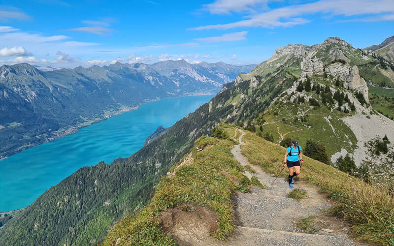
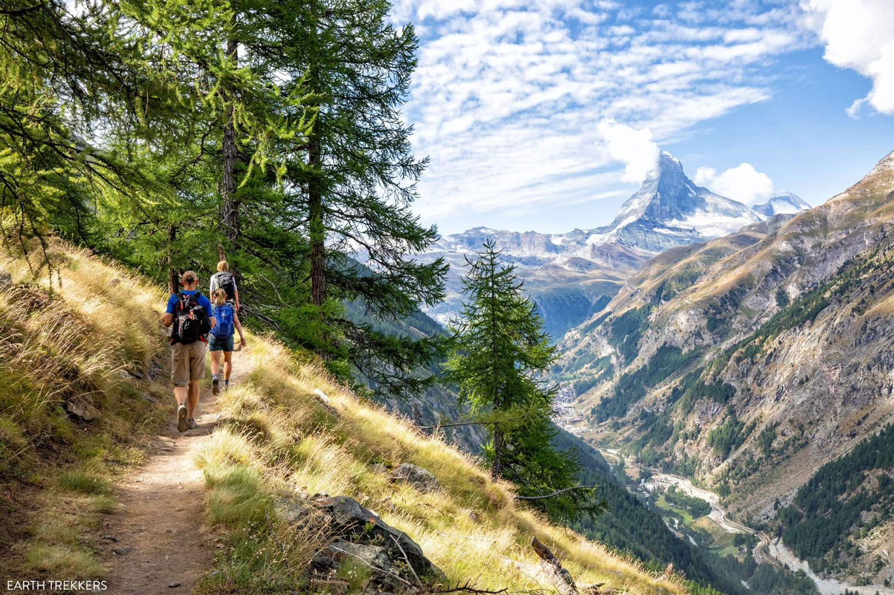
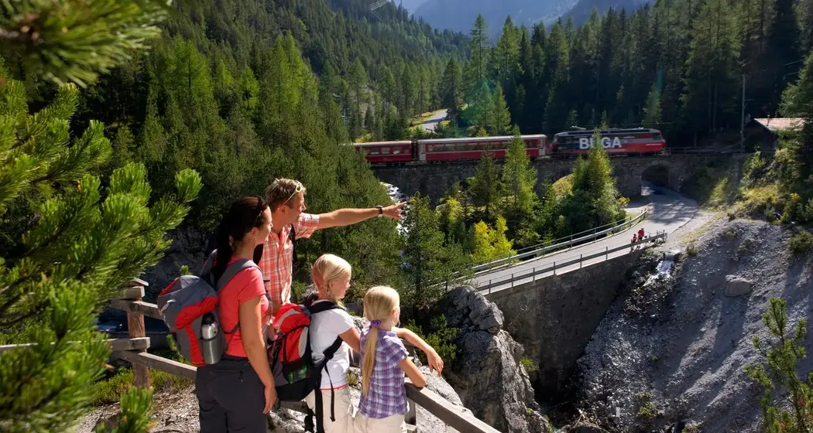
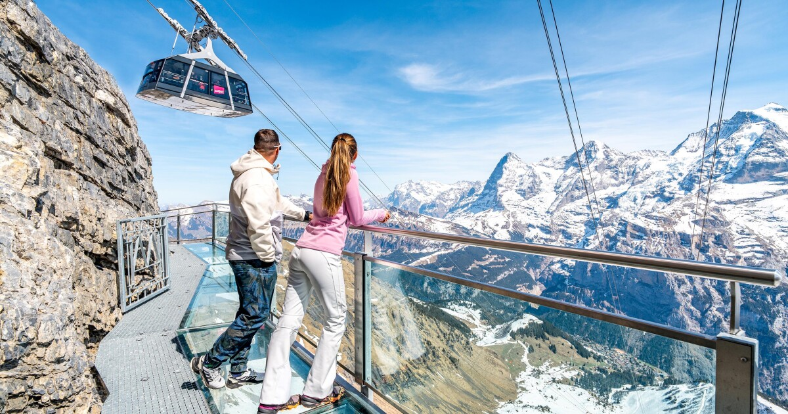
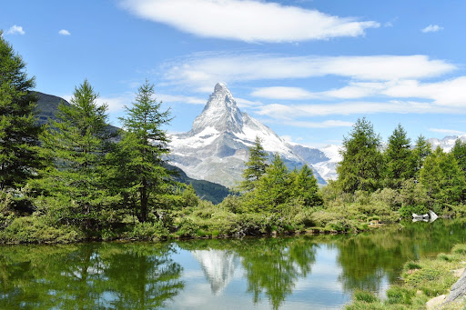
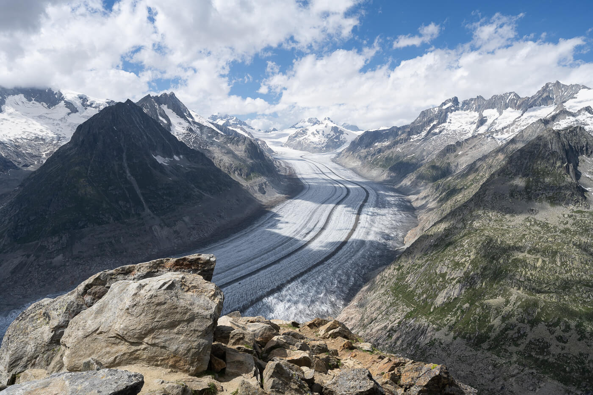

Switzerland has one of the world's most developed and well-maintained hiking trail networks. With over 65,000 kilometres of marked paths, there is a route for every ability level — from gentle lakeside strolls to multi-day high-altitude traverses. Trail markings are colour-coded and outstanding in quality.
Classic Hikes

Faulhorn Ridge (Bernese Oberland)
A legendary day hike from First above Grindelwald to Schynige Platte. Panoramic views of Eiger, Mönch, and Jungfrau throughout. Difficulty: moderate.

Haute Route
The classic 2-week high-level route from Chamonix (France) to Zermatt. One of the world's great long-distance mountain walks, mostly above 2,500m.

Via Albula / Bernina
A UNESCO Heritage walking route following ancient trading paths through Graubünden's spectacular valleys and past the Bernina Express rail line.

Schilthorn Circuit
Circular hike around the famous Schilthorn peak with spectacular views of the Eiger. Access via cable car from Mürren. Difficulty: moderate-hard.

Five Lakes Walk (Pizol)
A stunning circular route in canton St. Gallen connecting five crystal-clear Alpine lakes. Best in summer when wildflowers bloom. Difficulty: moderate.

Aletsch Glacier Walk
Walk alongside the longest glacier in the Alps (23 km). Accessible from Riederalp in canton Valais. The glacier is part of a UNESCO World Heritage Site.
Long-Distance Routes
- Via Alpina (Route 1) – Crosses Switzerland from east to west in ~20 stages, passing through 5 cantons
- Jura High Route – 320 km along the Jura ridgeline from Geneva to Basel
- Alpine Pass Route – 15 passes, 326 km from Sargans to Montreux
- Tour de Suisse – A 1,100 km circular route around the entire country
- Bernina Pass Trail – Follows the famous Bernina railway in Graubünden
Mountain Huts (SAC Hütten)
The Swiss Alpine Club (SAC) maintains over 150 mountain huts throughout the Alps. These huts offer dormitory accommodation, hot meals, and a wonderful community atmosphere. Booking in advance is strongly recommended in summer — huts fill up fast!
What to Pack
- Waterproof hiking boots with ankle support
- Rain jacket and warm layer (even in summer — mountains change fast)
- 1.5–2 litres of water per person
- Sunscreen and sunglasses (UV is intense at altitude)
- Topographic map or the Swiss hiking app (SchweizMobil)
- Small first aid kit and emergency whistle